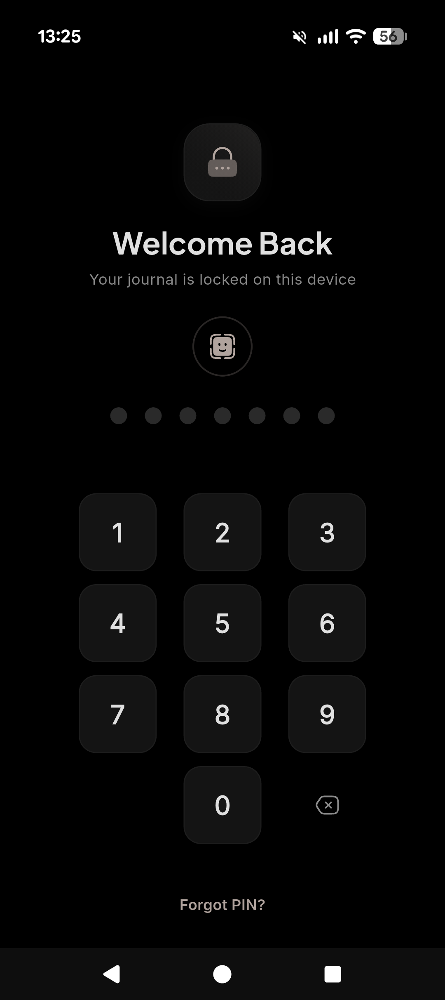
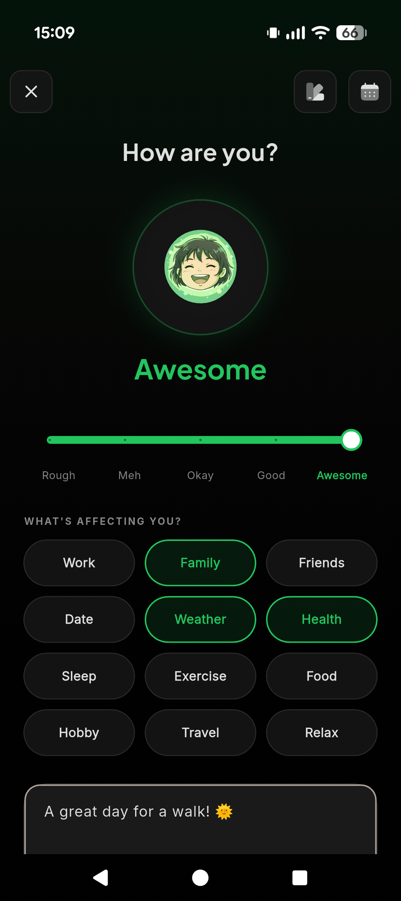
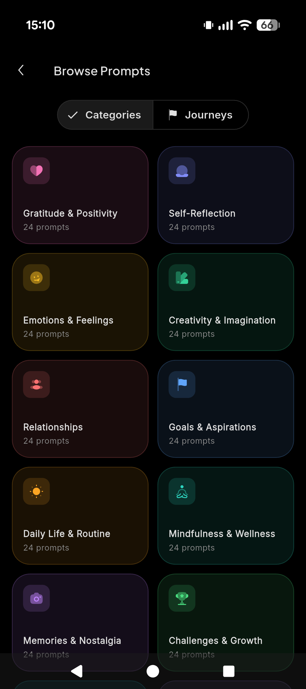
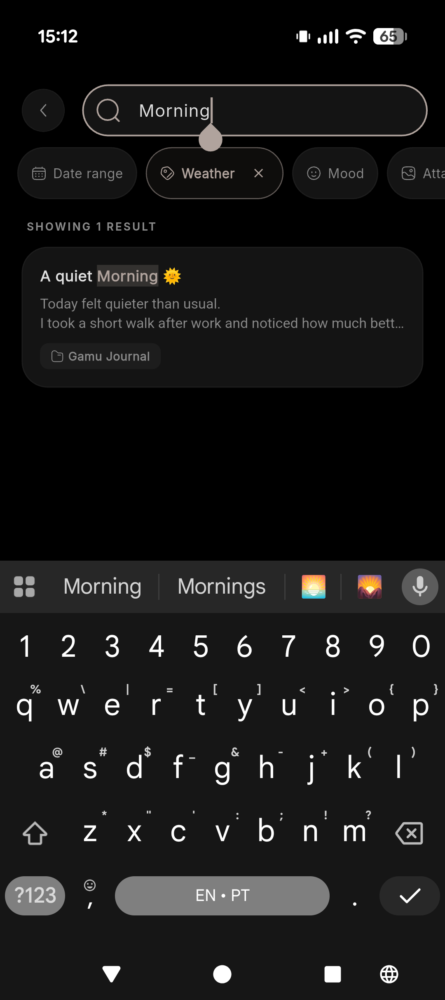
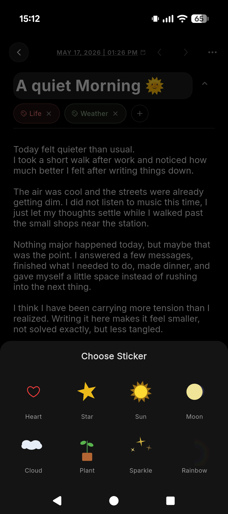
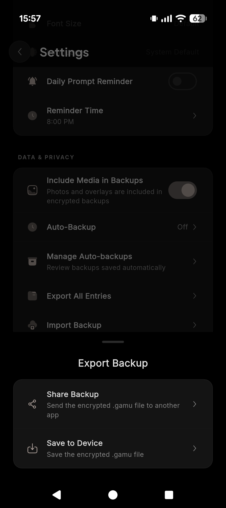
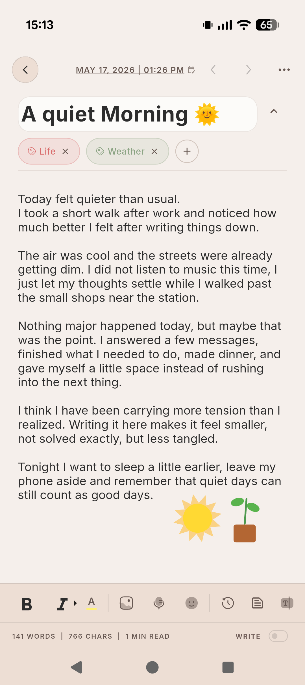
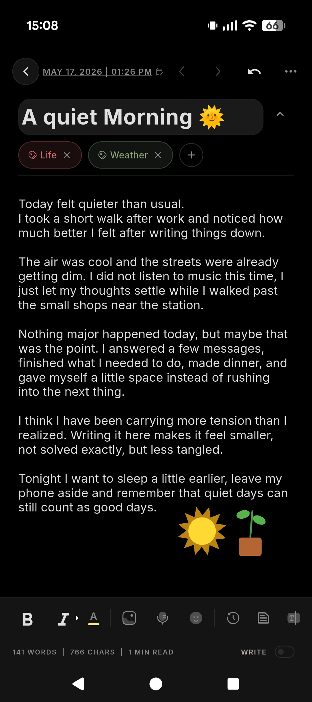

Write, reflect, and track your mood in an offline journal built for calm,
encrypted privacy, without accounts, cloud sync, ads, or subscription pressure.
Offline-firstNo accountAES-256 local storagePIN · password · biometrics
Free to install·No account required·Your entries stay on your device
01 Lock03 Mood// Encrypted on device// No account ever


100% offline by defaultZero accounts, zero trackingAES-256 local encryptionYou own the backup fileBuilt by a 2-person studio in Osaka
/ Inside the app
Eight screens. One quiet habit.
From your first PIN to your hundredth entry, every surface is built around one idea: this is yours, on this device, nobody else's.
01 · WRITE
Write privately
An uncluttered editor that gets out of your way.
02 · LOCK
Lock your journal
PIN, password, or fingerprint — your call.
03 · MOOD
Understand your mood
Five steps, a soft slider, and tags for what's affecting you.

04 · PROMPTS
Keep the habit
Daily prompts, gentle reminders, and a streak that won't shame you.

05 · SEARCH
Organize memories
Folders, tags, and instant search across years of entries.

06 · CAPTURE
Capture more than text
Photos, voice notes, and small stickers when words aren't enough.

07 · BACKUP
Stay in control
Export an encrypted .gamu file. Restore it when you need to.

08 · THEME
Write any time
OLED-friendly black at night. Warm paper by day.
/ The whole app
Built like a notebook, not a feed.
No streak guilt, no friend requests, no features you didn't ask for. Just the parts of a journal you actually use.
01 · Write
A blank page that respects your time.
Open the app, pick up where you left off. Markdown-friendly, with tags, dates, and a quiet word counter. No distracting "AI suggestions," no banner ads in your thoughts.
Sentence-case titles with optional stickers
Inline tags like Life, Weather, Health
Word, character and read-time counters
Per-entry calendar navigation
02 · Lock
Protected before anyone can read it.
Choose how you unlock: a PIN, a password, or your fingerprint and face. The whole journal is encrypted at rest with AES-256 — locking the screen also locks the data.
PIN, password or biometric unlock
Auto-lock on app background
No "recovery email" because no account exists
Hidden app preview when you switch apps
03 · Mood
Track how you feel over time.
A five-step slider from Rough to Awesome, with optional tags for what's affecting you today. Patterns surface gently in the history view — no leaderboards, no scores.
Eight built-in prompt categories — Gratitude, Self-Reflection, Creativity, Goals — plus longer themed Journeys. Or set a daily reminder and pick when it appears.
200+ curated prompts across 8 categories
Themed multi-day Journeys
Custom reminder times
Streaks that count, not pressure
05 · Search
Find old thoughts and memories quickly.
Type a word — "morning," "Tokyo," "mom" — and Gamu Journal scans the entries on your device only. Filter by weather, mood, date range, or attachments.
Full-text local search
Filter by date, mood, weather, tags, attachments
Folders for chapters, trips, projects
Pinned and favorited entries
06 · Capture
Capture more than text.
Attach a photo, record a voice note, or drop a small sticker into your entry. Everything lives inside the encrypted journal file — never uploaded, never indexed by anyone else.
Photo and image attachments
Voice memos for you journal entries
Hand-drawn stickers (heart, sun, plant…)
Stored inside the encrypted .gamu file
07 · Backup
Keep backups under your control.
Export the whole journal as a single encrypted .gamu file. Send it to your own cloud drive, your laptop, or an external SD card — wherever you trust. Restore takes one tap.
One-tap encrypted export
Save to device or share to any app
Import on a new phone in seconds
No backup server, ever — there isn't one
08 · Theme
Comfortable private writing, any time.
A true-black OLED theme for late-night entries, a warm paper theme for mornings. Both with the same tag pills, the same legibility, the same calm.
OLED-true black for late nights
Warm paper theme for daytime
Adjustable type size and line height
Follows your system theme automatically

/ The deal
Privacy you can understand.
No legal-page novella. No "industry-leading security" badges. Here is what actually happens to your words — in four short sentences.
01 · No account
You don't sign up.
There is no email, no username, no "Sign in with Google." The app opens. You write. That's it.
02 · No cloud sync
Your entries never leave your phone.
We don't run a server for your journal because we don't have one. The data lives in the app's encrypted storage on your device.
03 · Local protection
Lock it with PIN, password or biometrics.
The journal is encrypted at rest. Unlocking it requires whatever you set — and only on this device, in this app.
04 · You own backups
Backups are a file, not a service.
Export an encrypted .gamu file. Put it wherever you want — or nowhere. Import it onto a new phone in seconds.
What we don't claim:
end-to-end encryption (there's no "ends" — there's just your device), third-party audits, or zero-knowledge certifications. If we don't promise it on this page, we haven't done it. We'd rather under-promise than perform security theater.
/ Pricing
Simple pricing that respects trust.
Free is fully usable forever. Pro is a one-time purchase — not a subscription, not a "free trial that auto-renews." Pay once, keep it.
Free
Gamu Journal
$0forever
No credit card · No account
Unlimited entries
PIN, password, biometric lock
Daily mood tracker
Tags and folders
50+ daily prompts
Local search
OLED dark + paper themes
Install free
Available on Google Play and the App Store.
Pro · One-time
Gamu Journal Pro
Price to confirmone-time purchase
No subscription · No renewals
Everything in Free
200+ curated prompts & multi-day Journeys
Voice notes and photo attachments
Encrypted .gamu exports & one-tap restore
Custom reminder times
Hand-drawn sticker pack
Lifetime updates on this device
Unlock Pro
You'll see the exact local price in the store before any payment.
/ Honest answers
Questions, answered like a friend would.
No. There is no sign-up, no email, no username. You install the app and start writing. We don't have a user database because we don't have any users in the database sense.
Not by us. Gamu Journal has no cloud sync built in — your entries stay on the device they're written on. If you want a copy somewhere else, you can export an encrypted backup file and put it wherever you trust (Drive, Dropbox, an SD card, a USB stick).
The journal is encrypted at rest using AES-256 with a key derived from your PIN, password, or device biometric. The app auto-locks when backgrounded and never shows your entries in the recent-apps preview.
If you haven't exported a backup, your entries are gone with the device. This is the trade-off of a strictly-local design — there's no server for us to restore from. We strongly recommend exporting an encrypted .gamu file periodically and storing it somewhere you trust.
No. Free is free forever, and Pro is a one-time purchase through the app stores. No renewals, no free trials that quietly start charging you, no "Pro+." Buy once, keep it.
Yes. Gamu Journal is available on the App Store. Your journal still stays on the device where you write it unless you choose to export a backup yourself.